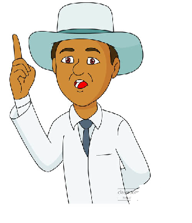
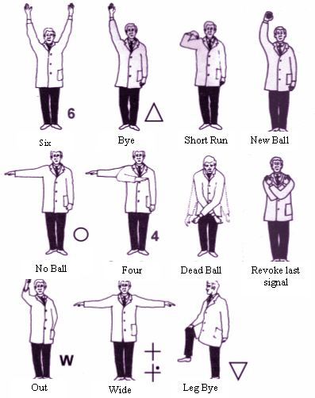

In cricket, an umpire (from the Old French nompere meaning not a peer, i.e. not a member of one of the teams, impartial) is a person who has the authority to make judgements on the cricket field, according to the laws of cricket. Besides making decisions about cricket Umpiring legality of delivery, appeals for wickets and general conduct of the game in a legal manner, the umpire also keeps a record of the deliveries and announces the completion of an over.A cricket umpire is not to be confused with the referee who usually presides only over international matches and makes no decisions affecting the outcome of the game.
Traditionally, cricket matches have two umpires on the field, one standing at the end where the bowler delivers the ball (Bowler's end), and one directly opposite the facing batsman (usually, but not always, at square leg). However, in the modern game, there may be more than two umpires; for example Test Matches have four: two on-field umpires, a third umpire who has access to video replays, and a fourth umpire who looks after the match balls, takes out the drinks for the on-field umpires, and also arranges travel and meals for all of the umpires.
Since 2002, the ICC has two panels of umpires: namely the Elite Panel of Umpires (two of which are, in theory, appointed to each Test Match) and the larger International Panel of Umpires.Professional matches also have a match referee, who complements the role of the umpires. The match referee makes no decisions relevant to the outcome of the game, but instead enforces the ICC Cricket Code of Conduct, ensuring the game is played in a reputable manner. The ICC appoints a match referee from its Elite Panel of Referees to adjudicate Test matches and One Day Internationals.Minor cricket matches will often have trained umpires. The independent Association of Cricket Umpires and Scorers (ACU&S), formed in 1955, used to conduct umpire training within the UK. It however merged to form the ECB Association of Cricket Officials (ECB ACO) on 1 January 2008. A new structure of cricket umpiring and scoring qualifications has now been put into place and the ACO provides training and examinations for these.[1] Cricket Australia has introduced a two-tier accreditation scheme and eventually all umpires will be required to achieve the appropriate level of accreditation. The ages of umpires can vary enormously as some are former players, while others enter the cricketing world as umpires. Physical disability need not necessarily be a barrier – in Victoria a 19-year-old with cerebral palsy has achieved the national Level 2 accreditation, is umpiring in a country competition, has umpired a statewide carnival, and has been recognised for his achievement by Cricket Victoria. The youngest umpire to achieve Level 2 Accreditation was a 15-year-old male West Australian in 2009.Nevertheless, in accordance with the tradition of cricket, most ordinary, local games will have two umpires, one supplied by each side, who will fairly enforce the accepted rules.
The Elite Panel of ICC Umpires is a panel of cricket umpires appointed by the International Cricket Council to officiate in Test matches and One Day Internationals around the world. The panel was first established in April 2002 when the ICC decided to reform the way that international cricket was umpired. The main change was that both umpires in a Test match and one of the umpires in a One-day international are now independent of the competing nations, whereas before 2002 just one of the umpires in a Test was independent and in ODIs both umpires were from the home nation. The majority of these ICC appointments are fulfilled by the members of the Elite Panel, who are generally thought to be the best umpires in the world
The International Panel of ICC Umpires was established by the ICC in 1994 following trial in 1992/3, to ensure that one neutral umpire would stand in every Test match. It is made up of officials nominated from each of the ten Test playing cricket boards. From 2002, its role in Tests was largely supplanted by the Elite Panel of ICC Umpires.Umpires from the International Panel are employed to officiate home One Day international matches, but may also be called upon to aid the Elite Panel in Test matches and overseas ODIs during busy cricketing calendar years. Each full member nation nominates two onfield umpires and a 3rd umpire to join the panel.
These decisions have an important effect on the play and are signalled straight away.

An umpire will not give a batsman out unless an appeal is made by the fielding side, though a batsman may walk if he knows himself to be out. This is nowadays rare, especially in Tests and first-class matches for contentious decisions; however, it is the norm for a batsman to walk when he is out bowled or out to an obvious catch. If the fielding side believes a batsman is out, the fielding side must appeal, by asking "How's that?"(HowzThatt), "Wot Wot" or "How was he?" (or by any other means that either umpire deems as a method of appealing).
The umpire's response is either to raise his index finger above his head to indicate that the batsman is out, or to clearly say "not out", which is usually accompanied with a shake of the head. (See BBC Sport). The 'out' signal is the only signal that if indicated by the striker's end umpire, does not require confirmation by the bowler's end umpire.
Either umpire may call, and signal, No Ball, for a ball which is illegally delivered (bowled), although each umpire has unique jurisdictions. The most usual causes for No Balls are foot faults or a ball passing above a batsman's waist, each of these being under the bowler's end umpire's jurisdiction. The square-leg umpire will rarely have to call a No Ball, as his jurisdiction is limited to infringements which very rarely occur. The signal is to hold one arm out horizontally and shout "no-ball"; the idea being that the batsman is aware of the no-ball being bowled. BBC Sport. In matches under the auspices of the ICC, it may also be a no-ball if the umpire feels that the bowler's arm is bent more than 15 degrees (Throwing rather than bowling). The ICC have chosen to amend Law 24.3 (Definition of Fair Delivery – the arm) as a result of controversy concerning the legality or otherwise of bowling actions of certain prominent bowlers. The no-ball doesn't count as one of the six in the over, and severely reduces the ways in which a batsman may be out (from 11 to 5), with the most common forms of dismissal all being removed, except for Run Out. The batsman may attempt to score runs from the 'extra' ball, however, and any runs scored as a result are recorded in addition to the penalty run for the no-ball itself (ex. a no-ball that reaches the boundary is assessed as five no-ball runs) and are therefore considered extras.
In certain forms of limited-overs cricket, like Twenty20 and One Day International, a no-ball that is the result of the bowler overstepping the crease or bowling above a batsman's waist will be penalised by the next delivery being subject to limited methods of dismissal. The umpire will signal this by circling a finger horizontally over his head, usually following a no-ball signal (and any other signals associated with the no-ball such as a boundary). During a free hit delivery, batsmen cannot be dismissed caught, bowled, or leg before wicket.
A Wide Ball is an illegal delivery in cricket, which is illegal due to it being "wide of the striker where he is standing and would also have passed wide of him standing in a normal guard position." (Law 25) A wide signalled by extending both arms out horizontally and is accompanied by a call of Wide Ball. It does not count in the over, and again reduces the way in which a batsman can be out (from 11 to 6; one can be stumped off at wide). This matter is incomplete If a delivery satisfies the criteria for both a No Ball and a Wide, the call and penalty of No Ball will take precedence. Like with No Ball, a batsman may attempt to score runs off the delivery which will be assessed in addition to the penalty run as wides and extras.
If the ball is no longer considered in play it is a dead ball. An umpire will signal this by crossing and uncrossing his wrists below his waist with the call Dead Ball, if he is required to do so under certain Laws, and also may do it if he thinks it is necessary to inform the players. See BBC Sport.
A similar signal is also used to indicate a "not out" from the Decision Review System. This is signalled by an umpire crossing his hands in a horizontal position in front and above his waist three times.
It is important that the scorers note down the play accurately and therefore the appropriate signals will be made by the umpire when the ball is dead (see Law 3.14). In addition to the following, the umpire repeats signals of dead ball, wide, and no-ball to the scorers. Scorers are required to acknowledge the signals from umpires; and umpires are required to get an acknowledgement before allowing the match to proceed.
If a batsman scores four when he hits the ball across the boundary (not by actually running them), the umpire signals this by waving his arm back and forth in front of the chest. This signal varies a lot between umpires, from two short, restrained, waves finishing with the arm across the chest, to elaborate signals that resemble those of a conductor of an orchestra. See BBC Sport. Whichever way the umpire signals a four he must, by law, finish with his arm across the chest (so as to avoid confusion about whether a No Ball was delivered as well).
A six scored by hitting the ball over the boundary is signalled by the umpire raising both hands above his head, often in a celebratory manner.[4] For a six to be scored, the ball must come off the bat, so it is impossible to have six byes for a ball crossing the boundary (without there being overthrows).
If runs are to be scored as byes, the umpire will hold up one open palm above the head. See BBC Sport.
Leg byes are signalled by the umpire touching a raised knee. See BBC Sport.
If one of the batsman turns to complete runs after the first without grounding his person or equipment behind the popping crease, then a short run is signalled by the umpire tapping his near shoulder with his fingers and the short runs are not scored. If more than one run is short, the umpire will inform the scorers as to the number of runs scored. See BBC Sport. There is also a case of deliberate short running, where the umpire will disallow all runs, although this is a rather rare occurrence.
If the umpire is unsure of a "line decision," that is, a run out or stumped decision, or if the umpire is unsure that the ball is a four, six, or neither, he may refer the matter to the Third Umpire. The umpires may additionally refer decisions to the Third Umpire regarding Bump Balls and catches being taken cleanly (but only after the on-field umpires have consulted and both were unsighted). The Third Umpire is not used except in international or important domestic matches. The signal to refer a matter is using both hands to mime a TV screen by making a box shape. See BBC Sport.
For extreme misconduct by one team, the umpire may award five penalty runs to the other team. Placing one arm on the opposite shoulder indicates that the penalty runs are awarded to the fielding team, but if the umpire taps that shoulder, the penalties are awarded to the batting team. See BBC Sport.Five penalty runs are more commonly awarded when the ball strikes a foreign object on the field, usually a helmet of the fielding side.
In Test cricket and first class cricket, the last hour of the last day of play has special significance. First, there is a minimum number of overs (20 in the Laws of Cricket, fifteen in Tests) that must be bowled in the last hour. Second, and more importantly, a result must be reached before the time elapses and the umpire calls "stumps" for the match to have a winner; otherwise, the match ends with a draw and no winner. The umpire signals the last hour by pointing to his wrist (and the watch on it), which is raised above his head. See BBC Sport.
If the umpire makes an incorrect signal, he may revoke it. To do so, he crosses his arms across his chest, then makes the corrected signal. A revocation may be made if the umpire discovers an incorrect application of the laws, such as, signalling "out" before realising that the other umpire signalled a no-ball. Also, an umpire may revoke if he accidentally signals a four though he intended to signal six. See BBC Sport. With the implementation of the Decision Review System, a signal may also be revoked if the Third Umpire reports that his review supports reversing the call.
In matches lasting more than two days the captain usually has the option of taking another new ball after a set number of overs (usually 80) have taken place since a new ball was introduced (an innings always begins with a new ball). The umpire at the bowler's end signals to the scorers that a new ball has been taken by holding the ball above his head. The scorers note the time that the new ball has been taken.If the ball is damaged to the extent that it gives either team a disadvantage, it is replaced with a used undamaged ball in similar condition. A similar-condition used ball is also used if the ball is ever lost in the course of play (for example, if a ball hit for six becomes irretrievable).In 2007 the International Cricket Council (ICC) brought in a new law stipulating that, in One Day Internationals, after 35 overs have been bowled the ball must be replaced with a clean used ball. See Cricinfo. In 2011 this rule was changed so that a different ball is used at each end, thus each ball getting used for 25 overs. The balls used in One Day Internationals are white and become discoloured very easily, especially on dusty or abrasive pitches, and thus the ball change is deemed necessary to ensure that the ball is easily visible.
ICC has introduced a system of Powerplays in limited-over cricket which restricts the number of fielders outside the 30-yard circle, among other things. When a Powerplay is beginning, the umpire moves his arm in circular fashion in front. In One-Day internationals the first 10 overs of an innings are automatically a Powerplay, and after 10 overs power play 2 is justifyed.from 11 to 40 overs in this maximumly 4 fielders are placed out side the 30 yard circle.after 40 overs the 3rd power play is justifyed in which maximum 5 fielders should be placed by fielding team it ends till from 40 overs to 50 over. In Twenty20, a Powerplay is in effect for the first six overs of an innings.